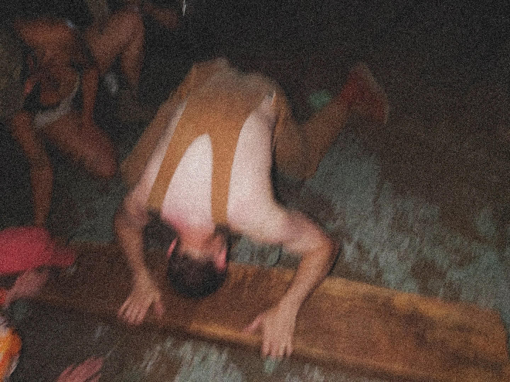

https://studhn.bandcamp.com/album/spf
STUD is the environmental harsh
noise moniker of Minnesota based artist Austin Marts.
Destructive loops and amplified remnants of dead or decaying trees.
Violent arbor worship, dedicated to the dissolving natural world.
Destructive loops and amplified remnants of dead or decaying trees.
Violent arbor worship, dedicated to the dissolving natural world.